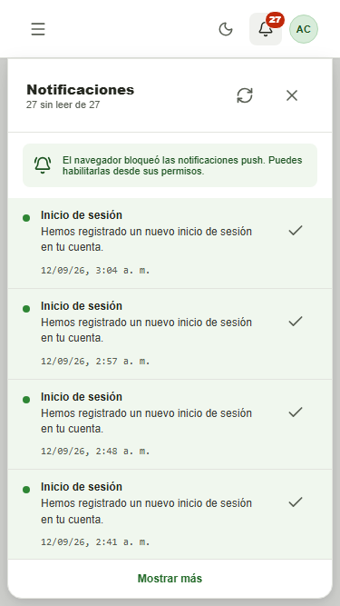
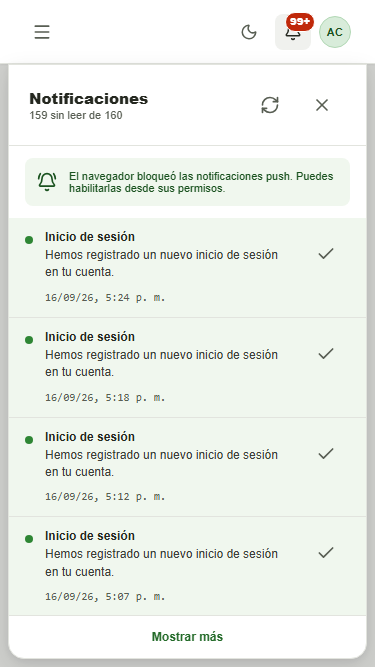
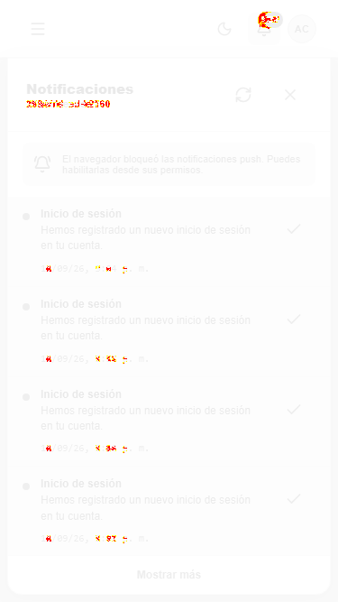
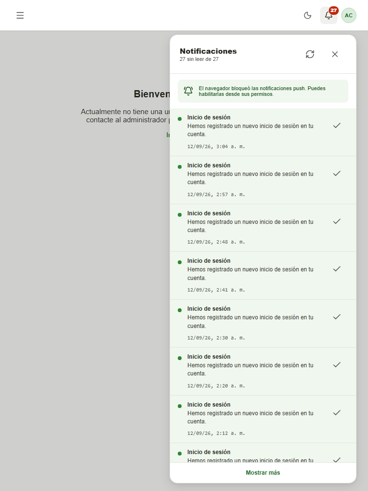
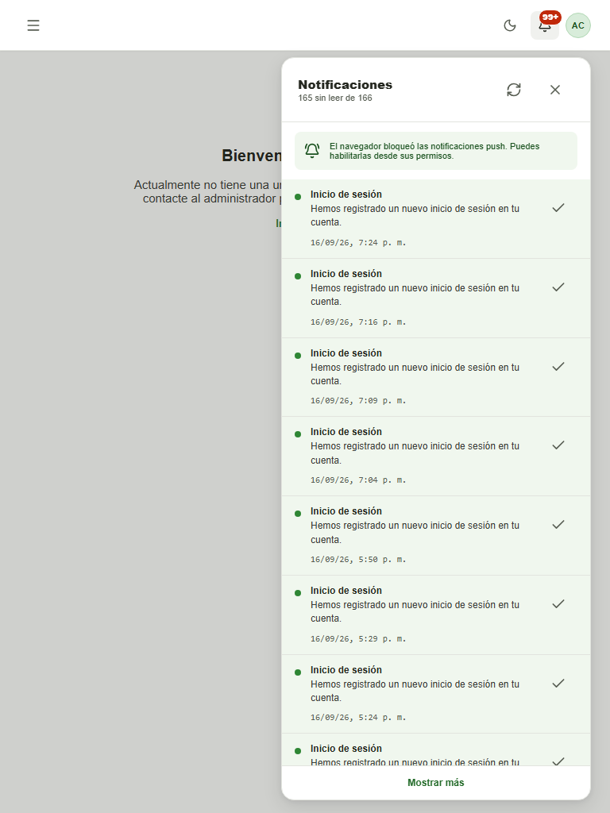
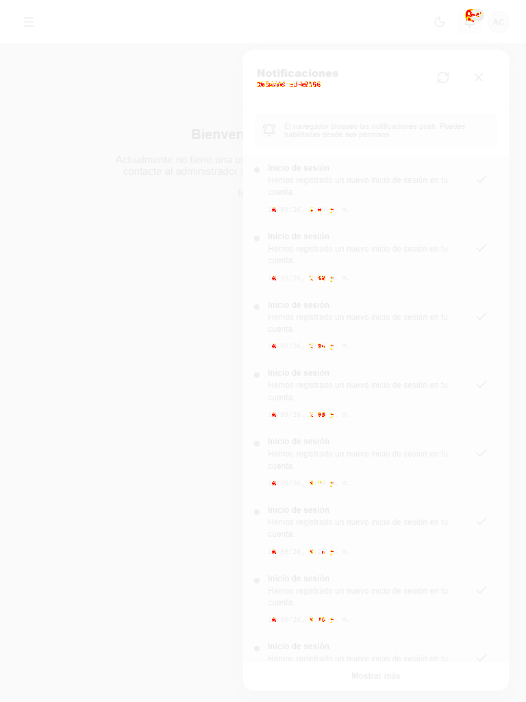
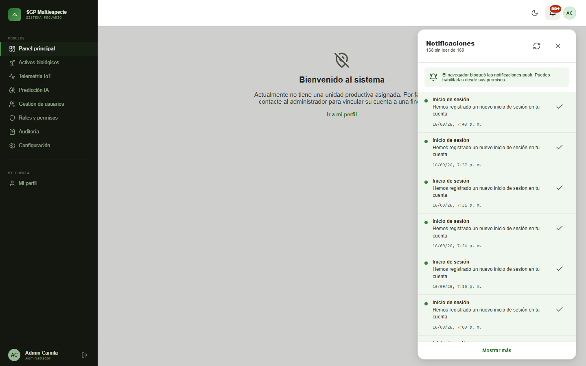
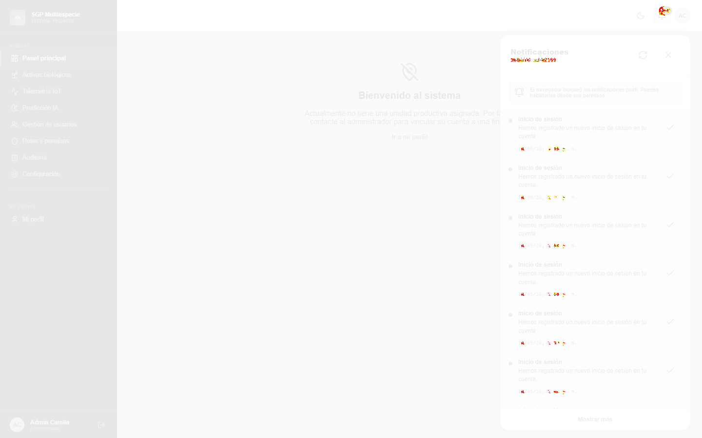

| Proyecto (viewport) | Prueba | Resultado | Detalle |
|---|---|---|---|
| movil | panel de notificaciones abierto | ⚠ Diferencia visual (evaluada) | 553 px (1.00%) |
   | |||
| tablet | panel de notificaciones abierto | ⚠ Diferencia visual (evaluada) | 686 px (1.00%) |
   | |||
| escritorio | panel de notificaciones abierto | ⚠ Diferencia visual (evaluada) | 658 px (1.00%) |
  | |||